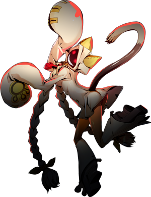

◈ SHADOW CAT
Taokaka
BlazBlue: Entropy Effect — Персонаж
70
Атака
35
Защита
95
Скорость
60
HP
★★★
Сложность
Ближний
Тип боя
Taokaka — самый быстрый персонаж. Она создаёт теневых клонов и атакует с нескольких направлений, сбивая врагов с толку.
Клоны
Скорость
Воздушные комбо

Досье
Имя
Taokaka
Оружие
Когти
Талант
Shadow Clone — создание теневых клонов
Роль
Мобильный боец / Ассасин
ATK70
DEF35
SPD95
HP60
Навыки
Cat Spirit Encore
Наследуемый 1
Создаёт клона, повторяющего последнюю атаку.
Dancing Edge
Наследуемый 2 [EX]
Серия быстрых рывков, наносящих урон всем встречным врагам.
Triple Dash
Мобильность
Три рывка подряд без кулдауна.